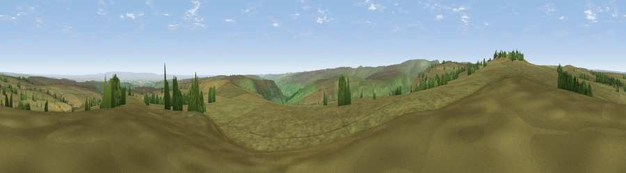

Viewpoint near West Scrafton
#6265 in England · top 5% of its area beats it · near West ScraftonThe view, rendered

A 360° render of this exact spot computed from the terrain model, tree cover and land cover — summer colours, afternoon light, calibrated against photographs of famous viewpoints. Real trees, hedges and buildings will differ in detail.
The panorama
Grey silhouette: terrain skyline in each direction (720 bearings, Earth curvature and refraction included). Dashed green: skyline with trees (+15 m) and buildings (+8 m) as obstacles. Blue strip: how far the ground is visible on each bearing.
Where the view opens
Wedge length = distance to the farthest visible ground on that bearing (vegetation-aware). Rings at 10, 25 and 50 km.
What fills the view
95% grassland · 3% woodland · 2% cropland
Angular shares of the visible panorama (visual magnitude), not map area. Landscape diversity 0.10 (0–1 Shannon).
Key numbers
More beautiful places nearby
The staircase of upgrades: each row has a higher view potential than everything closer. Driving times are estimates from straight-line distance, calibrated against real road routing — check an actual route before setting out.
| Place | Direction | Drive | Score |
|---|---|---|---|
| Viewpoint near Lofthouse | SE · 1 km | ~3 min | 69.7 |
| Great Roova Crags | N · 4 km | ~9 min | 72.5 |
| Viewpoint c9553_8056 | W · 6 km | ~13 min | 74.9 |
| Viewpoint near East Witton | NE · 8 km | ~16 min | 77.8 |
| Little Ingleborough | W · 35 km | ~53 min | 78.8 |
| Viewpoint near Ingleton | W · 35 km | ~53 min | 79.5 |
| Whernside | W · 35 km | ~53 min | 79.9 |
| Viewpoint near Kirby Knowle | ENE · 38 km | ~56 min | 80.5 |
54.20510, -1.86697 · source: screening · position refined by local search. Computed location — check access rights before visiting.